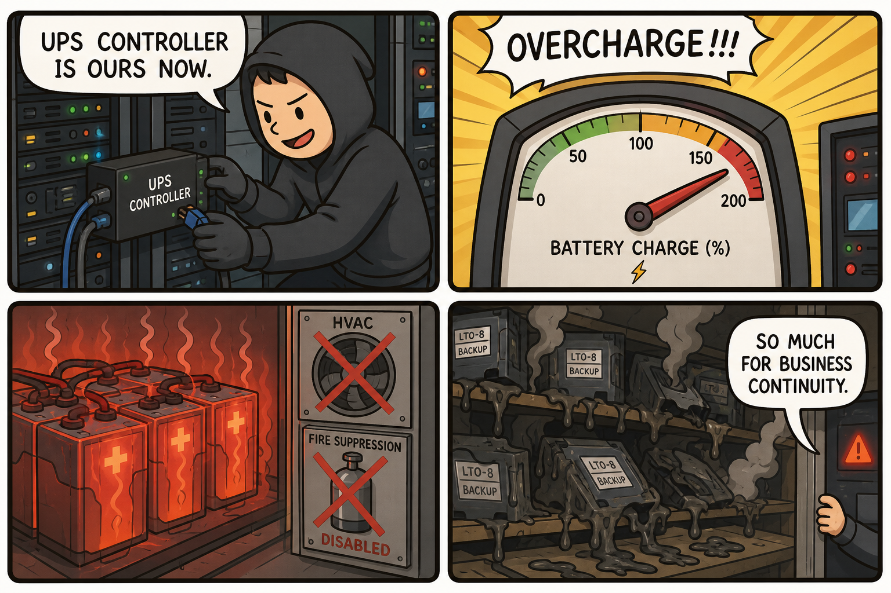
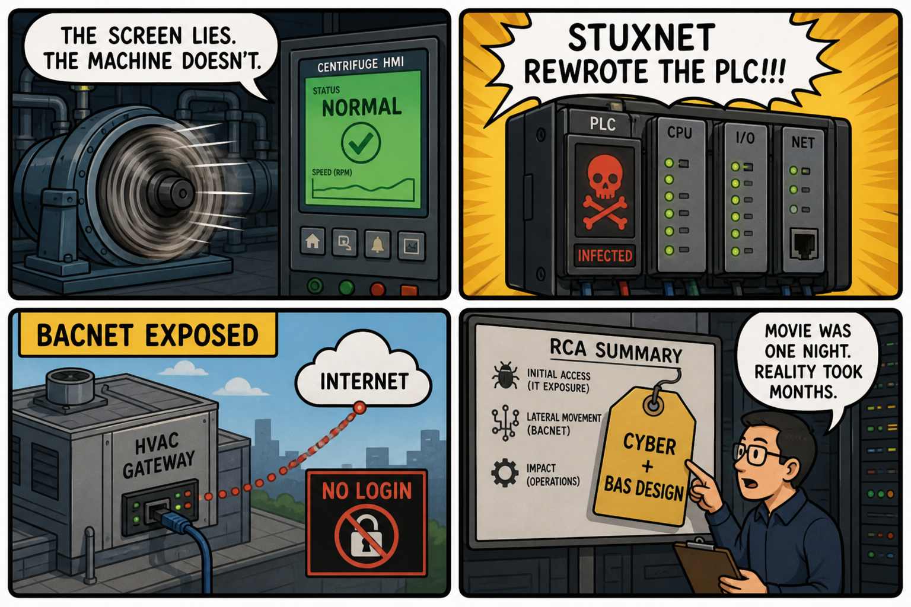

Module 05 / Data Center & Critical Power Mr. Robot (2017) — S3E5/E6
Cyber-to-physical destruction via battery management overcharging, HVAC tampering, and building-protocol exploitation.
The Script — Cinematic Anchor
Dialogue Extract
Scene Visual — Comic Strip

Dramatis Personae → OT Mapping
- Elliot Alderson / fsociety→Red Team / Advanced Persistent Threat conducting a blended physical-and-cyber operation
- Dominique DiPierro (FBI)→Incident Response / Law Enforcement Liaison investigating the attack after the fact
- Facility engineers (background)→Facility / BAS Operations staff responsible for power and environmental systems
Diegetic Failure Mode
An operation blends a physical intrusion (installing rogue devices) with a cyber override of the UPS charge controller to force battery overcharging — a thermal runaway risk — while separately manipulating HVAC and fire-suppression building automation, all aimed at physically destroying backup infrastructure that the target's business continuity depends on.
Theoretical ICS Architecture
Purdue Model Impact
Protocols & Control Logic
- BACnet/IP and BACnet MS/TP: the dominant building-automation protocol family for HVAC and fire-panel integration, historically deployed with little to no authentication.
- Modbus TCP: common in UPS/battery-management monitoring integration with BAS.
- Telemetry spoofing to the HMI: the defining control-logic concept here — feeding an operator console falsified "normal" readings while the physical process runs outside safe parameters, the same technique documented in Stuxnet.
The Plant — Empirical Grounding
Plant Visual — Comic Strip

Real-World Incident Precedent
Two real cases ground this module. Stuxnet (discovered 2010) is the definitive case of PLC logic manipulation causing physical damage: malware reprogrammed Siemens S7-300 controllers to intermittently over-speed uranium enrichment centrifuges while feeding pre-recorded "normal" telemetry back to the operator HMI, so the physical sabotage remained invisible to plant staff for an extended period. Separately, security researcher Billy Rios's 2013 disclosure demonstrated that a Google office building in Sydney, Australia had its HVAC building-automation system exposed to the internet via an unauthenticated BACnet/IP gateway, allowing direct external access to building controls with no login required.
Cinematic vs. Reality Matrix
| Dimension | Media Depiction (The Script) | Industrial Reality (The Plant) |
|---|---|---|
| Failure Vector | A single blended operation executes both the charge-controller override and HVAC/fire tampering within one coordinated event. | Stuxnet required a multi-stage supply-chain intrusion (USB-borne, then network propagation) reprogramming PLC logic over months; the 2013 BACnet case required only an unauthenticated internet-exposed gateway with no privileged access needed at all. |
| Time to Impact | A dramatic, near-immediate thermal event within the episode's timeframe. | Stuxnet's centrifuge damage accrued gradually over months, specifically engineered to avoid detection — the opposite of a fast, dramatic strike. |
| Operator Visibility | Facility engineers are largely unaware of the intrusion until physical alarms trigger. | This is Stuxnet's defining real-world lesson: the malware fed pre-recorded "normal" process data to the Siemens WinCC HMI while the physical process ran outside safe parameters, so operators saw nothing wrong on screen. |
| Failsafe Behavior | Fire suppression and HVAC safety systems are themselves shown failing under direct attack. | Stuxnet specifically manipulated centrifuge speed within a range that avoided triggering the existing over-speed protection trip — exploiting the gap between "normal" and "trip" telemetry rather than defeating the safety system outright. |
Root-Cause Analysis (RCA)
Classification: Network/CyberBoth grounding cases are Network/Cyber failures: Stuxnet via air-gap bypass and telemetry spoofing to the HMI; the BACnet case via an unauthenticated, internet-exposed building-protocol gateway — a design and configuration gap corresponding to a failure of IEC 62443 SR 1.1/1.2 access control requirements.
Engineering Runbook & Countermeasures
Telemetry Envelope
| Parameter | Normal / Baseline | Trip Threshold | Condition at Incident |
|---|---|---|---|
| UPS battery cell voltage (VRLA float) | ~2.27 V/cell | Thermal runaway risk above ~50–60°C cell temperature without charge-current cutback | Depicted overcharge scenario removes the automatic cutback, driving temperature past safe limits |
| Data hall temperature | 18–27°C (ASHRAE recommended band) | Alarm above ~30°C | HVAC tampering depicted as disabling normal thermal control |
| Centrifuge rotor speed (Stuxnet analog) | ~1,064 Hz nominal | Over-speed protection trip at a defined upper limit | Briefly driven to ~1,410 Hz and cycled down to ~2 Hz, per the Symantec dossier — outside safe mechanical limits but within the range that avoided triggering the trip |
Mitigation / Recovery Protocol
- Authenticate and segment BAS gateways: no internet-facing BACnet/Modbus building controller without VPN and multi-factor authentication, segmented from general IT — directly addresses the 2013 BACnet gateway exposure pattern.
- Independent hardwired protection: thermal/overcurrent protection on battery strings that cannot be overridden by a network-issued setpoint change.
- HMI/telemetry integrity validation: cross-check reported process values against an independent, out-of-band sensor path to catch spoofed "normal" readings — the specific gap Stuxnet exploited.
- Physical access control & device inventory: maintain asset inventory and port security at backup/DR facilities to close the physical-installation pathway the operation depended on.
- Change management / code-signing for PLC logic uploads: verify any control logic change offline against a known-good baseline before deployment.